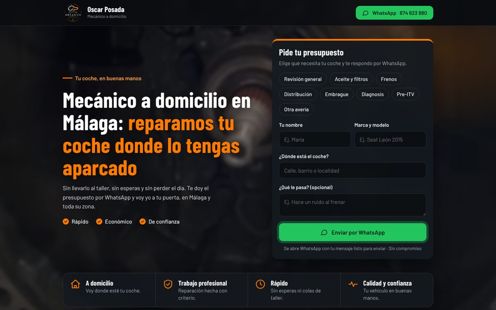

Diseño web en Málaga
Hago webs para negocios de Málaga con un objetivo claro: que la gente que entra te escriba. Rápidas, claras en el móvil, preparadas para Google y con WhatsApp siempre a mano.
Qué incluye tu web
Diseño a medida
Hecho para tu negocio, no una plantilla igual que la de la competencia.
Pensada para el móvil
La mayoría de tus clientes te van a ver desde el teléfono. Primero se diseña para ahí.
Que cargue rápido
Imágenes optimizadas y código ligero. Si tarda, la gente se va.
Preparada para Google
Títulos, descripciones, estructura y alta en Google Search Console desde el primer día.
Contacto directo
Botón de WhatsApp siempre visible y mensajes ya escritos para que escribirte cueste un toque.
Textos que se entienden
Te ayudo a contar qué haces de forma clara, sin relleno.
Para quién es
Para negocios que quieren que su web les traiga clientes, no solo "estar en internet". Sobre todo negocios locales de Málaga y alrededores.
- Negocios sin web o con una web antigua que no se ve bien en el móvil
- Servicios a domicilio, talleres, clínicas, tiendas y profesionales
- Negocios que quieren que les escriban por WhatsApp, sin formularios
- Quien quiere una web propia y no depender solo de redes sociales

Un ejemplo real
Oscar Posada, mecánico a domicilio en Málaga
Oscar trabaja a domicilio y no tenía web, solo un flyer. Le hice una web con sus colores, botón de WhatsApp para pedir presupuesto en un toque y preparada para salir en Google en Málaga.
"Me parece un tío cercano y que entiende los problemas de visibilidad en Google. Te los mejora de forma profesional y rápido."Oscar PosadaVer más trabajos
Cómo trabajo
- 1
Me cuentas
Qué haces, a quién vendes y qué te gustaría conseguir. Por WhatsApp, sin reuniones eternas.
- 2
Te paso propuesta
Qué haría y cuánto costaría, por escrito. Sin compromiso.
- 3
Lo hago
Te enseño el trabajo antes de publicarlo y lo ajustamos juntos.
- 4
Lo mejoro
Una vez publicado, reviso cómo va en Google y lo voy afinando.
Preguntas frecuentes
¿Cuánto cuesta una página web?
Depende de lo que necesites: no es lo mismo una web de una página que una tienda online. Escríbeme por WhatsApp, cuéntame tu caso y te paso un presupuesto cerrado y sin compromiso.
¿Cuánto se tarda en tener la web?
Depende del tamaño de la web y de lo rápido que tengamos los textos y las fotos. Te doy una fecha junto con el presupuesto.
¿Podré ver la web antes de que se publique?
Sí. Te la enseño antes de publicarla y la ajustamos juntos hasta que te guste.
¿La web saldrá en Google?
La preparo para Google desde el principio y la doy de alta en Google Search Console. Salir en las primeras posiciones depende también de tu competencia, y para eso está el trabajo de SEO local.
¿Trabajas solo en Málaga?
Trabajo desde Málaga, para negocios de Málaga y del resto de España. Todo se puede hacer por WhatsApp.
¿Hablamos de tu web?
Cuéntame qué necesitas por WhatsApp. Te digo qué haría y cuánto costaría, sin compromiso.
Hablar con RubénTambién te puede interesar: SEO local en Málaga